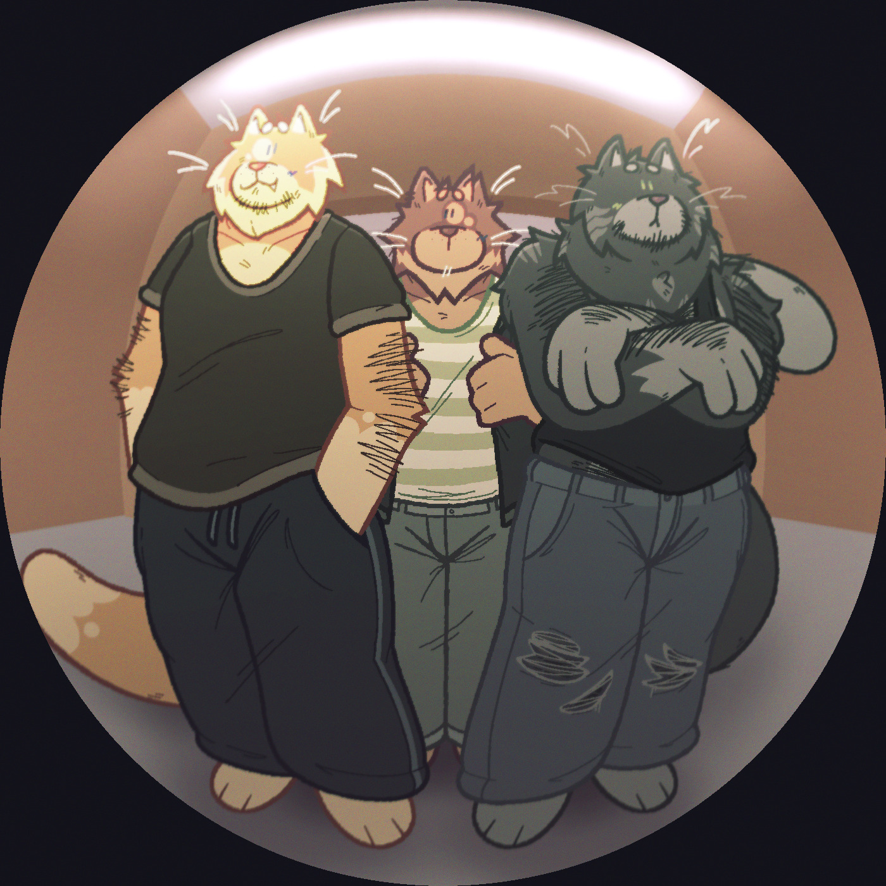

crumbs is a band consisting of cheez-it (frontman, guitarist), caesar (drummer), and crouton (bassist)

(photo of all three)
crumbs is inspired by most of the artists I listen to, but mainly Rat Restaurant and venturing
Bandcamp
SoundCloud
Twitter
Tumblr